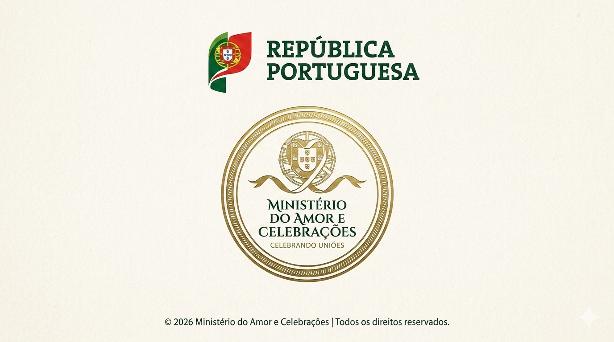

Aviso: Candidaturas ao Cargo de Porta-Alianças
Estado Atual: CANDIDATURAS EM ESPERA
Informamos que o período de recrutamento para o cargo de Porta-Alianças começará brevemente, assim que a data do matrimónio for anunciada.
Procedimento de Candidatura (Futuro)
Quando o sistema abrir, os candidatos deverão submeter a seguinte documentação oficial para validação:
- Fotografia recente (formato passe);
- Carta de motivação detalhando as "Melhores Qualidades";
- Certificado de Habilitações (últimas notas escolares com carimbo da escola).
A submissão deverá ser enviada para o correio eletrónico registado pelos noivos: zemonteiro@gmail.com
